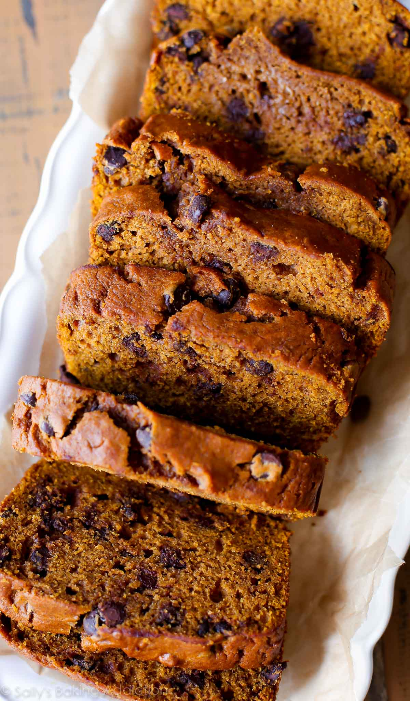

Pumpkin Bread
Description

When September rolls around, I have the sudden urge to make every quick bread recipe under the sun. Some of my favorites are banana bread, apple cinnamon bread, and this orange beauty: the BEST pumpkin bread I’ve ever had. This is a favorite pumpkin bread recipe because each slice is incredibly moist and the process is very straightforward. There are no dry crumbs here! This pumpkin bread is also packed with pumpkin and pumpkin spice flavors. I’m telling you… this is some good stuff.
When I was testing this pumpkin bread recipe, it took me about 6 or 7 tries to get it just right. After plenty of sunken, soggy, and flavorless loaves, I finally mastered what ingredients and how much of each to use, and the result is pumpkin perfection. The recipe is a lot like these pumpkin muffins.
Ingredients
- 1 and 3/4 cups flour
- 1 teaspoon baking soda
- 2 teaspoons ground cinnamon
- 1 tablespoon pumpkin pie spice
- 1 teaspoon salt
- 2 eggs
- 1/2 cup sugar
- 3/4 cup dark brown sugar
- 1 and 1/2 cups pumpkin puree
- 1/2 cup vegetable oil
- 1/4 cup orange juice
Steps
- Adjust the oven rack to the lower third position and preheat the oven to 350°F (177°C). Lowering the oven rack prevents the top of your bread from browning too much, too soon. Grease a metal 9×5-inch loaf pan with non-stick spray. Set aside.
- In a large bowl, whisk the flour, baking soda, cinnamon, nutmeg, cloves, ginger, and salt together until combined. Set aside. In a medium bowl, whisk the eggs, granulated sugar, and brown sugar together until combined. Whisk in the pumpkin, oil, and orange juice. Pour these wet ingredients into the dry ingredients and gently mix together using a rubber spatula or a wooden spoon. There will be a few lumps. Do not over-mix. Gently fold in the chocolate chips, if including.
- Pour the batter into the prepared loaf pan. Bake for 60–65 minutes, making sure to loosely cover the bread with aluminum foil halfway through to prevent the top from getting too brown. The bread is done when a toothpick inserted in the center comes out clean with only a few small moist crumbs. This may be before or after 60–65 minutes depending on your oven, so begin checking every 5 minutes around the 55-minute mark.
- Allow the bread to cool completely in the pan on a wire rack before removing and slicing.
- Cover and store leftover pumpkin bread at room temperature for up to 3–4 days, or in the refrigerator for up to a week.
- Enjoy!